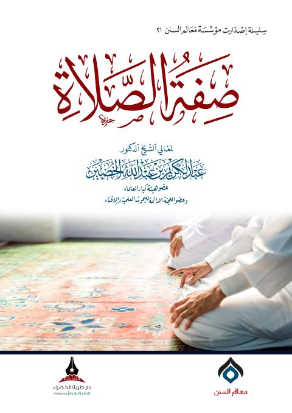

Downloads need an internet connection.
صفة الصلاة
Authors: عبد الكريم عبد الله الخضير
Publishers: دار طيبة الخضراء
**▫️ العنوان: صفة الصلاة** ▪️ المؤلف: #عبد_الكريم_بن_عبد_الله_الخضير ▫️ الناشر: #دار_طيبة_الخضراء ▪️ تاريخ النشر: 1441هـ 2020م ▫️ بلد النشر: مكة المكرمة، #السعودية ▪️ الطبعة: 1 ▫️ عدد الأجزاء: 1 ▪️ الصفحات: 93 ▫️ نوع الوعاء: #كتاب ▪️ التصنيف الرئيسي: #الفقه_وأصوله ۪